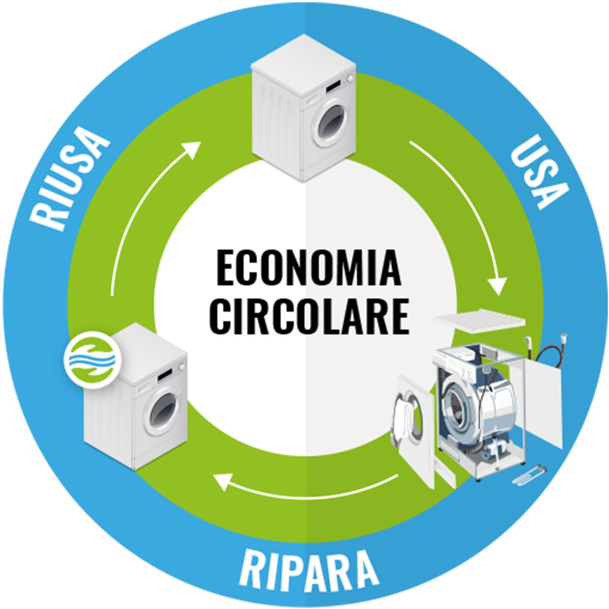
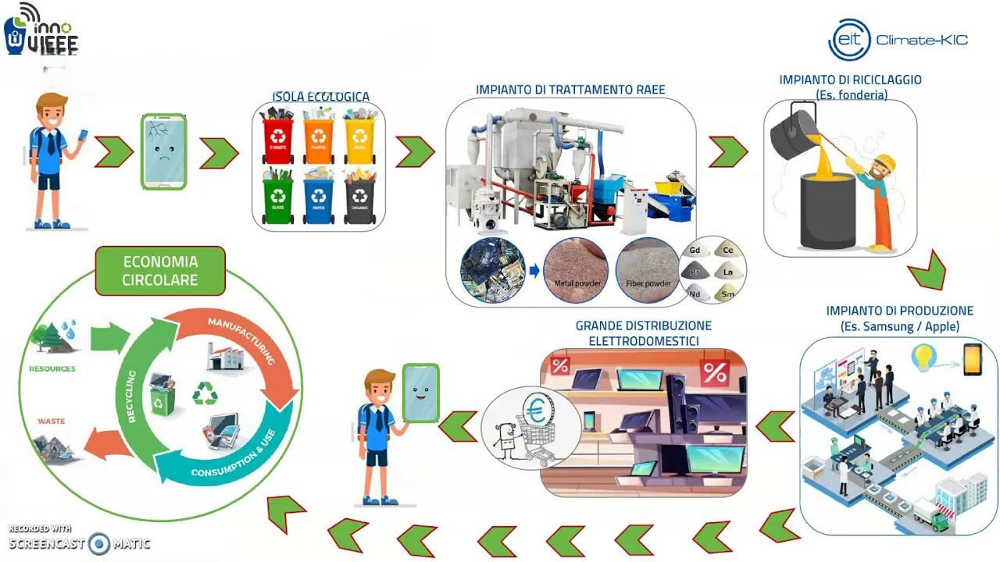
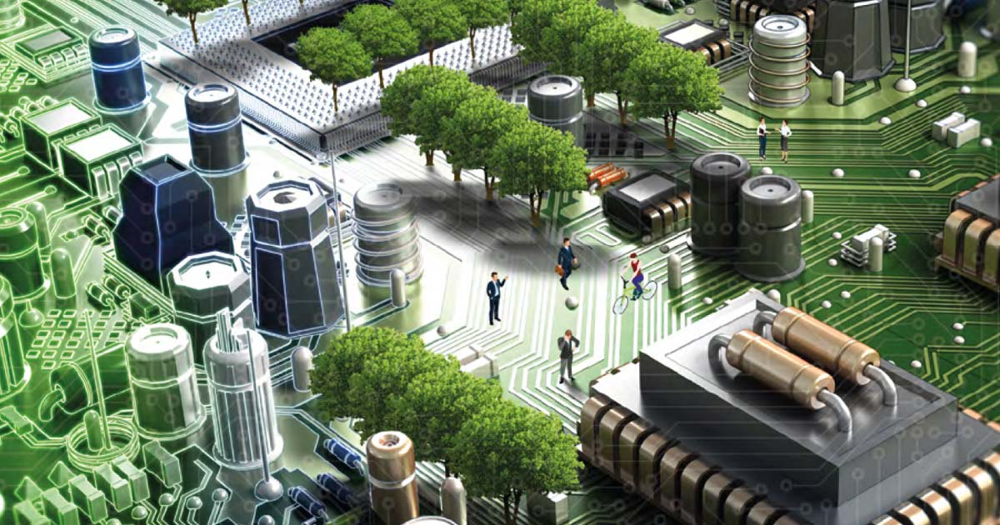

Cosa può essere riciclato?
Tutti o quasi tutti i rifiuti RAEE possono essere riciclati, ma ogni tipo di dispositivo richiede un processo di riciclo specifico,
poiché varia la composizione dei materiali che li costituiscono. Tuttavia, con le giuste pratiche e infrastrutture di riciclo, la maggior
parte dei componenti di questi dispositivi può essere recuperata e riutilizzata, riducendo così l'impatto ambientale derivante dalla
produzione di nuove apparecchiature elettroniche.
Ecco alcuni esempi di RAEE che possono essere riciclati:
- Computer e componenti
- Telefoni cellulari e accessori
- TV e apparecchi audiovisivi
- Apparecchi elettrici per la casa
Come si riciclano i rifiuti RAEE?
Il processo di riciclo dei rifiuti RAEE è articolato e richiede diverse fasi.
1) Raccolta
La prima fase fondamentale è la raccolta dei rifiuti RAEE. Questa può avvenire attraverso vari canali, tra cui i centri di raccolta comunali,
le aziende specializzate nel riciclo dei RAEE, i negozi che vendono dispositivi elettronici e campagne di sensibilizzazione.
È importante che i consumatori smaltiscano i loro dispositivi elettronici dismessi in modo corretto, portandoli presso i punti di raccolta
designati anziché gettarli nelle discariche o abbandonarli nell'ambiente.
2) Trasporto

Dopo la raccolta, i rifiuti RAEE vengono trasportati verso strutture specializzate nel loro trattamento e riciclo. Durante il trasporto,
è essenziale garantire che i materiali siano gestiti in modo sicuro per evitare danni all'ambiente e alla salute pubblica.
3) Smontaggio
Una volta giunti alla struttura di riciclo, i rifiuti RAEE vengono smontati manualmente o tramite processi automatizzati.
Durante questa fase, gli operatori rimuovono gli involucri esterni dei dispositivi elettronici e separano i vari componenti, come plastica,
metallo, vetro, circuiti stampati e batterie. Questo processo è fondamentale per preparare i materiali per le successive fasi di trattamento.
4) Separazione dei materiali
Dopo lo smontaggio, i materiali separati vengono ulteriormente suddivisi in base al tipo. Ad esempio, il vetro viene separato dalla plastica,
i metalli vengono classificati in diverse categorie in base alla loro composizione, e così via. Questa fase richiede l'uso di attrezzature
specializzate e tecniche specifiche per garantire una separazione accurata dei materiali.
5) Trattamento e recupero
Una volta separati, i materiali vengono sottoposti a vari processi di trattamento per renderli pronti per il recupero e il riutilizzo.
Ad esempio, i metalli possono essere fusi e raffinati per eliminare le impurità, mentre la plastica può essere triturata e lavata per
rimuovere eventuali contaminanti. Durante questo processo, è importante prestare attenzione alla gestione sicura dei materiali per evitare
danni all'ambiente e alla salute umana.
6) Riutilizzo e riciclo
Una volta trattati, i materiali recuperati possono essere utilizzati per produrre nuovi prodotti o materie prime secondarie. Ad esempio,
il metallo riciclato può essere utilizzato per la produzione di nuovi componenti elettronici, mentre la plastica riciclata può essere
trasformata in altri oggetti. Questo ciclo di riutilizzo e riciclo contribuisce a ridurre il consumo di risorse naturali e l'impatto
ambientale associato alla produzione di nuovi materiali.

Conclusioni sull'importanza del riciclo dei RAEE
Innanzitutto, il riciclo dei RAEE contribuisce in modo significativo alla tutela dell'ambiente. Questi dispositivi contengono materiali
potenzialmente dannosi per la salute umana e l'ecosistema se smaltiti in modo improprio, come metalli pesanti e sostanze chimiche nocive.
Il riciclo consente di recuperare e trattare in modo sicuro tali materiali, riducendo il rischio di contaminazione del suolo, dell'acqua e dell'aria.
Il riciclo dei rifiuti RAEE è una responsabilità che coinvolge sia singoli individui che la società nel suo insieme.
Ogni persona può contribuire al miglioramento dell'ambiente partecipando attivamente al riciclo
dei propri dispositivi elettronici dismessi. Questo comporta un cambiamento di mentalità, che spinge verso una maggiore consapevolezza
sull'importanza di smaltire i RAEE in modo corretto anziché abbandonarli nell'ambiente.
Inoltre, è fondamentale promuovere politiche e iniziative che favoriscano il riciclo responsabile dei rifiuti elettronici a livello globale.
Le autorità governative, le organizzazioni non governative e le aziende devono collaborare per sviluppare e attuare normative efficaci sul
trattamento e il riciclo dei RAEE. Questo può includere incentivi per il riciclo, campagne di sensibilizzazione pubblica e investimenti nelle
infrastrutture di gestione dei rifiuti. Il raggiungimento di una gestione sostenibile dei rifiuti elettronici richiede un impegno collettivo
e continuo da parte di tutti gli attori coinvolti. Solo attraverso un approccio integrato e collaborativo possiamo garantire un futuro
più pulito e sicuro per le generazioni future.